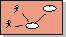

Artifacts >
Artifacts >
 Business Modeling Artifact Set >
Business Modeling Artifact Set >
 Business Use-Case Model... >
Business Use-Case Model... >
 Business Use-Case Model >
Business Use-Case Model >
 Guidelines >
Use-Case Diagram in the Business Use-Case Model
Guidelines >
Use-Case Diagram in the Business Use-Case Model
Artifacts >
Business Modeling Artifact Set >
Business Use-Case Model... >
Business Use-Case Model >
Guidelines >
Use-Case Diagram in the Business Use-Case Model
Guidelines:
|
 Use-Case Diagram |
A use-case diagram shows business actors, business use cases, business use-case packages, and their relationships. |
Diagrams with business actors, business use cases, and relationships among them are called use-case diagrams and illustrate relationships in the business use-case model.
See also Guidelines: Use-Case Diagram.
There are no strict rules about what to illustrate in use-case diagrams. Show what you think are interesting relationships in the model. The following diagrams may be of interest:
It is recommended that you include each business actor, business use case,
and relationship in at least one of the diagrams. If it makes the business
use-case model clearer, they can be part of several diagrams and you can
show them several times in the same diagram.
|
Rational Unified
Process
|